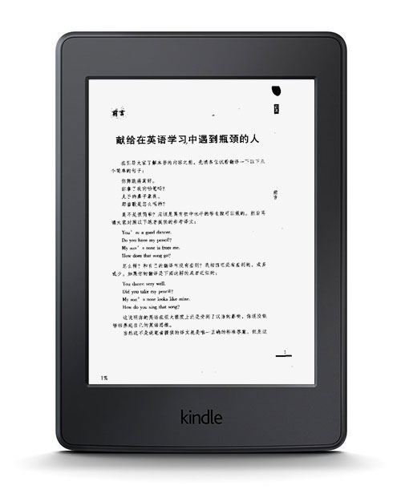
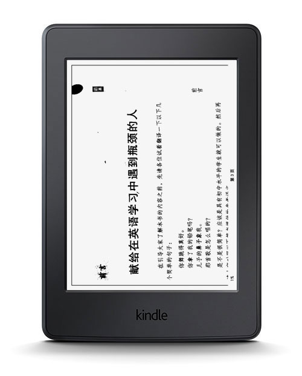

编辑：书伴
Kindle 是一个小巧的电子书阅读器，屏幕只有 6 吋大小，因为我们常见的 mobi、azw、azw3 等主流电子书格式，它们的内容实际上都是由 HTML 页面组成的，非常适合能够自适应屏幕大小的电子书的阅读。但是常被小伙伴们们诟病的是，使用 Kindle 阅读 PDF 文档。因为很多 PDF 文档都是以扫描版为主，适配 Kindle 屏幕大小的 6 吋版的 PDF 文档十分稀少，这就导致在用 Kindle 阅读 PDF 文档时字号偏小。如下图所示：

这种情况如何解决呢？通常会有小伙伴选择利用 Koreader 或 K2pdfopt 这类 PDF 重排软件把原文件处理成适合 Kindle 阅读的 6 吋文档，但显然这会制造出更多问题。比如 Koreader 需要在 Kindle 越狱状态下才能安装，K2pdfopt 虽然可以运行在桌面上但重排效果并不怎么理想。
虽然让一个 6 吋屏幕显示大出其尺寸一倍多的 PDF 页面有些强人所难，但 Kindle 还是尽可能结合自身的硬性限制给出了一个比较不错的解决方案——横屏阅读。使用很简单，打开一个 PDF 文档点击页面上边缘调出工具条，点击右上角的“三道杠”设置按钮，在弹出的菜单中点选“横屏模式”，即可把 PDF 页面逆时针旋转 90 度，刚好达到适合阅读的状态。如下图所示：

除此之外，对于一些问内比较细节的内容，还可以结合两点触摸缩放功能辅助阅读。不过需要注意的是，因为 Kindle 的性能并不强劲，缩放并没有手机或平板那样顺滑，在操作时候不要有太多有间断的快速、重复的动作。比如，缩放时要么用两个手指划一下，等它执行完毕再进行再次缩放操作；要么缩放时让动作连续进行，不要有间断，达到预期程度后在放开手指。局部移动的时候同理，同时还需要注意不要点住在移动，而是直接向某个方向划动手指。